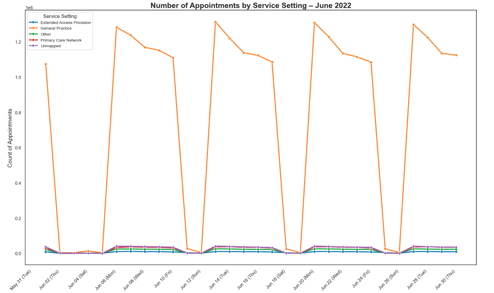
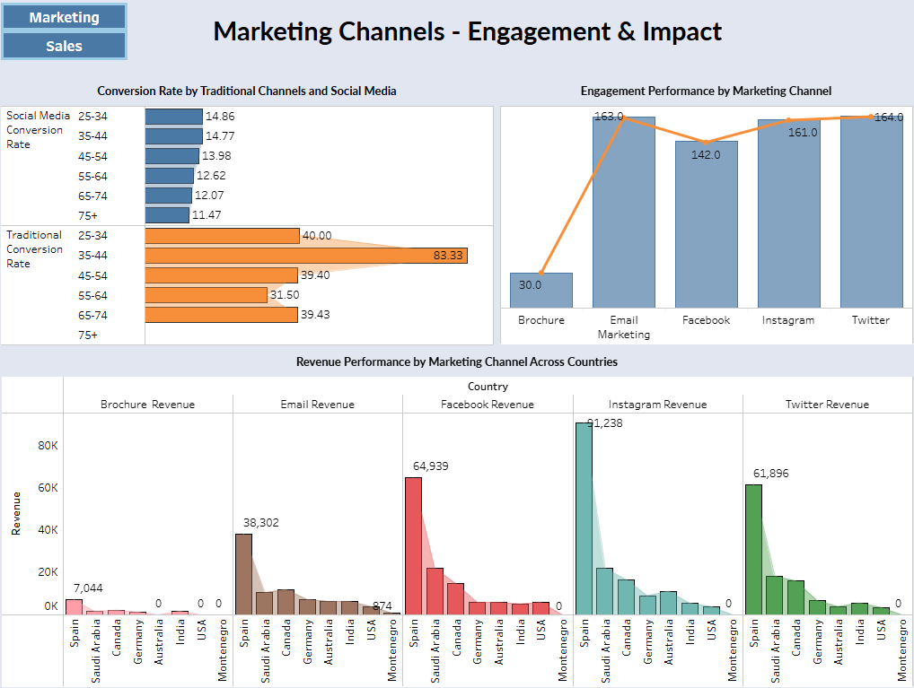
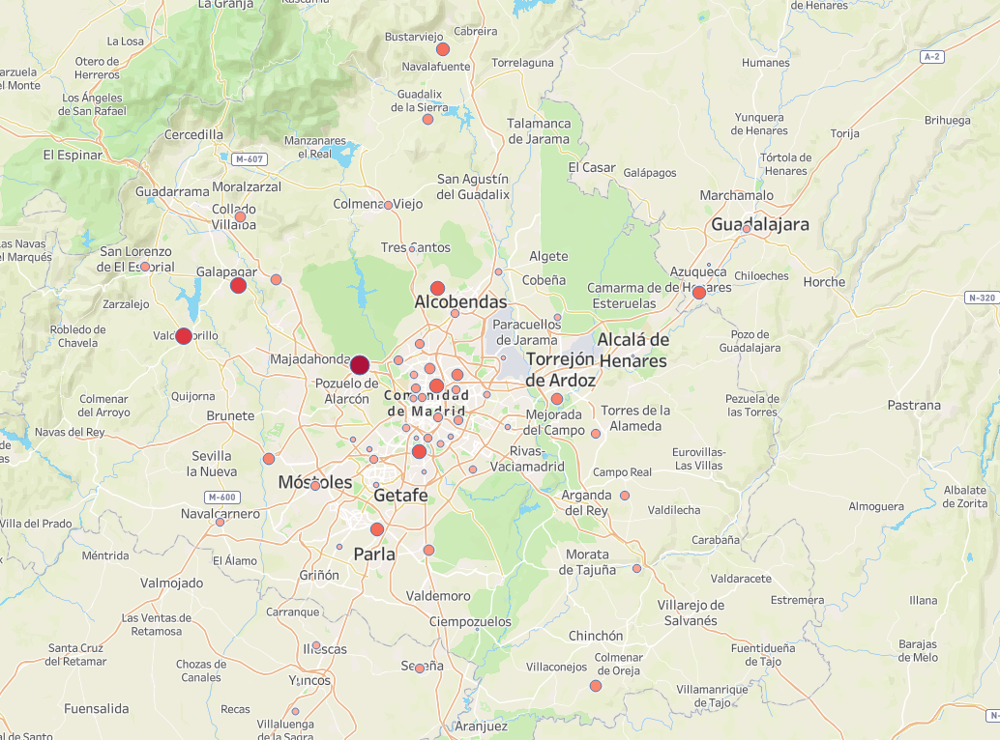

Analyzed NHS GP appointment data to uncover trends that impact budgeting and service delivery.
Tech: Python, Pandas, Seaborn, Matplotlib | 📂 View Notebook
Exploratory analysis of market data using SQL and Tableau dashboards.
Tech: SQL, Tableau | 🧠 View Dashboard | 📄 View SQL Script
Team project analyzing ice sales near Madrid with predictive modeling and segmentation.
Tech: Python, Scikit-learn, Matplotlib | 📂 View Notebook
